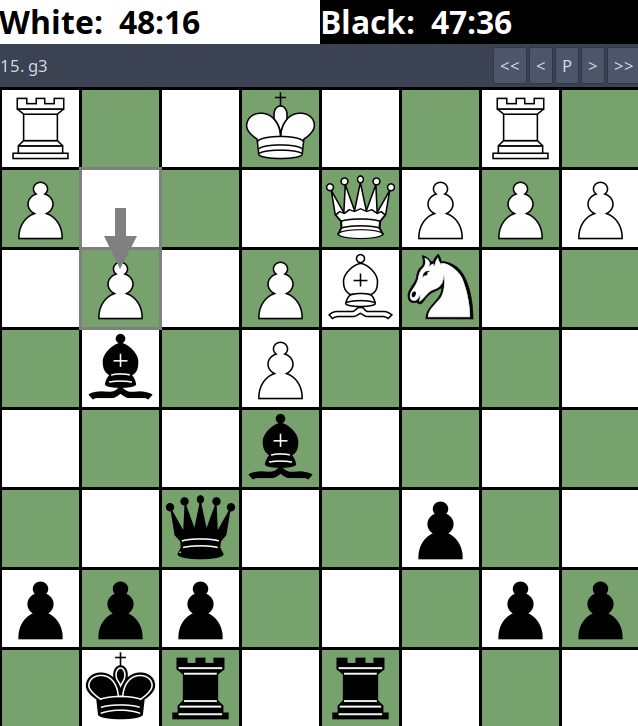

This is a chess engine written in C++. It can communicate using the XBoard/CECP protocol, so you can play against it through the XBoard GUI or drive it from the command line. The goal was to build something that plays reasonably well by implementing the classical techniques that power most strong engines. It has a compact board representation, a deep search with good pruning, and a simple evaluation function. Overall, it plays at around a 1500 ELO level.

The board is represented using bitboards where one 64-bit integer per piece type per color and each bit corresponds to a square. This maps naturally onto modern CPU word sizes and lets you compute things like "all squares attacked by white bishops" with a handful of bitwise operations rather than looping over a square array.
Sliding piece moves (rooks, bishops, queens) are a bit tricky. For example, a rook's attacks depend on which squares are occupied, so a naive approach would need to walk along each ray at runtime. The engine uses magic bitboards to avoid this. For each square, a magic number is precomputed such that multiplying it by the occupancy bitboard and shifting produces a compact index into a lookup table of precomputed attack sets. Move generation then becomes a single table lookup per piece.
The search is built on minimax with alpha-beta pruning. Minimax explores the game tree assuming both sides play optimally. Alpha-beta cuts off branches that can't influence the final result, typically halving the effective branching factor and allowing roughly twice the search depth for the same computation.
On top of that, several standard enhancements are layered in. A transposition table stores previously evaluated positions hashed by Zobrist key, so the same position reached via different move orders is only evaluated once. Move ordering uses the stored hash move as the first candidate, since trying the best known move first maximizes alpha-beta cutoffs. Null-move pruning grants the opponent two moves in a row; if they still can't improve their position, the current position is likely good enough to cut off the search early.
Finally, quiescence search extends the horizon at leaf nodes by continuing to search captures and checks. This avoids the horizon effect, where the engine would otherwise stop evaluation at an unstable position. An unstable position could be something like you capture a knight with your queen and the engine stops searching, but the queen would be recaptured in the next turn. From the engine's perspective, it thinks its a good capture, but it does not see that it is actually bad due to limited search depth. My quiescence search continues searching until there are no more captures (to a certain depth) and the board is "quiet"/quiescent.
The evaluation function is simple. It is material count plus piece-square tables. Each piece type has a table that assigns a bonus or penalty based on its square, encoding heuristics like preferring knights near the center, rooks on open files, or keeping the king tucked away in the endgame. This is fast to compute and enough to produce sensible play. This heuristic evaluation function is probably the next most important to improve upon. I would like to have a measure of king safety, pawn structure and other factors.